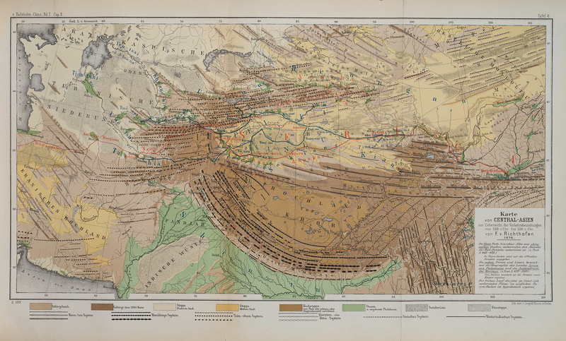

The Silk Road(s) can be described as three different, but overlapping, phenomena:
Text here

Caption: map of the Silk Road trade routes from Britannica.com.
In 1877, the German geographer Baron Ferdinand von Richthofen coined the term die Seidenstrasse (the Silk Road) to describe the trade routes by which Chinese silk was exported to the Mediterranean world in classical antiquity and the Middle Ages. For further detail, see the article "The Invention of the Silk Road, 1877" by Tamara Chin, published in the journal Critical Inquiry Vol. 40 (2013), pp. 194-219. (This article may or may not be free access for all readers.)

Caption: von Richthofen's map from his 1877 atlas. The Silk Road as he defined it is shown in red, cutting across the center of the map.
Click here to open a larger version of the map in a new tab.
Write something here. Include links to websites and/or news articles. This should include cellist Yo-Yo Ma's music group the Silk Road Ensemble and China's current "New Silk Road" initiative.
{kind=link}